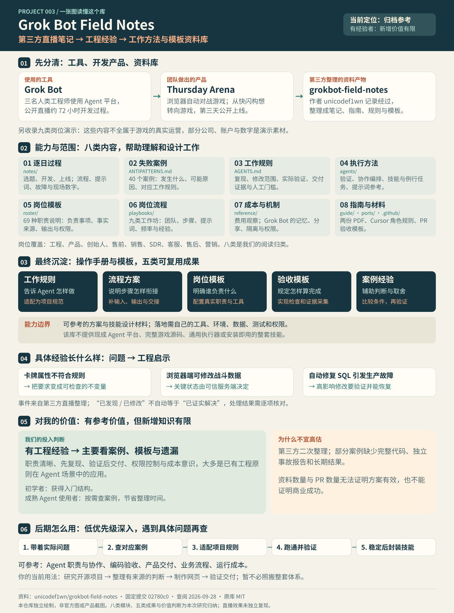

库的能力
提供三天产品开发笔记、失败案例、Agent 工作规则、验证与编排指南、岗位模板、业务流程和成本观察，帮助理解开发过程、设计协作与验收。它交付的是第三方资料与配置素材，不能直接运行 Grok Bot 或复现游戏。
第三方整理的 Agent 工程案例与模板资料库。对已有工程经验的你，新增知识有限；主要用于查具体案例、参考模板和检查遗漏，适合归档后按需使用。

引导图之后，用这六项明确我们对资料库的结论。可沉淀工程资产和扩展方向属于后续迁移建议。
提供三天产品开发笔记、失败案例、Agent 工作规则、验证与编排指南、岗位模板、业务流程和成本观察，帮助理解开发过程、设计协作与验收。它交付的是第三方资料与配置素材，不能直接运行 Grok Bot 或复现游戏。
把工程经验写成 Agent 与人共享的目标、职责、事实来源、工具使用和完成标准；由现有 Agent 平台执行，由项目自己的检查器验证，再将反馈更新到规则。核心是工作约定与反馈机制，未提供新模型、推理算法或运行平台。
可转化为项目规则与任务输入输出约定、验证命令与证据采集、角色交接与异常升级、PR 验收记录、例行任务成本审查，以及经验证的技能封装。原库主要提供原则和样例；具体工具、程序、权限及测试需要自行适配实现。
适用于 Agent 辅助编码与缺陷修复、开源项目研究和网页交付、产品原型与上线验收、小规模多 Agent 协作，以及客服、销售、营销等重复工作流程的设计。业务演示需重新接入真实资料和工具，不能直接视为已验证经营效果。
可进一步做成项目验证工具包、开源研究助手技能、带状态记录与人工门槛的协作流程，或工程事故与评估知识库。需要分别补齐检查器、数据接入、执行与重试机制、权限控制及持续评估；这些是我们的迁移方向，尚未实现。
对已有工程经验的你，新增方法有限；价值主要在具体案例、模板整理和遗漏检查。当前适合归档参考，降低持续深入优先级。以后遇到研究、Agent 协作或交付验证的问题，再按需查阅、适配并验证，无需整体照搬。
这个库以开发直播为材料，保存过程、解释失败，再整理出工作规则、协作流程、岗位说明和验收模板。对我们的主要价值是工程实践参考。对有经验的人，新方法有限；更适合查具体案例、改写模板、检查遗漏，并结合自己的环境验证。
工程师在直播里使用的 Agent 平台，协助研究、开发和其他工作。
团队做出并公开上线的浏览器自动对战游戏，是这份研究的具体案例。
作者 unicodef1wn 对直播和岗位演示的整理，进一步提炼成资料与模板。
怎样理解“内部做了什么”：人类工程师直播开发产品；不同岗位展示如何使用 Agent；资料作者记录过程并提炼方法。仓库本身主要承载这些文档与配置材料。原库定位 ↗
以下八类是本页为了理解而做的归类，对应原库实际目录。展开每一项，查看内容、用途与来源。
notes/记录每天的产品事实、工作流程、提示词、失败、数字和人物。Thursday Arena 的方向变化与上线故障可以回到这里核对。
如何参考：先看问题产生的情境，再判断解决思路是否适合自己。
查看对应资料 ↗ANTIPATTERNS.md每个案例围绕发生什么、原因和形成的规则展开，涉及验证不足、职责不清、客户端可信状态、上线真实路径和重复运行成本等。
如何参考：遇到相似故障时，检查自己是否缺少相同的约束或验证步骤。
查看对应资料 ↗AGENTS.md包括先复现问题、控制改动范围、实际运行应用、附完成证据，以及哪些事项需要人判断。文字规则的执行效果取决于实际平台与工具。
如何参考：保留项目现有规范，只吸收适用条款，并填写真实命令与完成标准。
查看对应资料 ↗agents/验证指南讨论如何把成功条件变成可重复检查；编排指南讨论职责与交接；技能和例行任务资料讨论重复工作怎样稳定执行。示例验证命令仍需自己实现。
如何参考：把“做好”具体化为可观察的结果，再设计工具、检查器和错误反馈。
查看对应资料 ↗roster/每个角色描述负责和不负责的事、事实来源、输出、触发条件与需要审批的操作。数量表示资料覆盖范围，不能用来衡量团队配置是否合理。
如何参考：先选一个真实需要的职责，避免多个角色重复负责、相互等待。
查看对应资料 ↗playbooks/工程：分派任务与证明交付；产品：数据到需求与实现；创业者：客户、竞品和产品反馈；售前：技术研究与演示；销售：客户准备与记录；SDR：线索研究与信息补全；客服：知识库、工单与升级；售后：客户状态和会后行动；营销：研究、定位、落地页、活动与分析。
如何参考：按自己的业务角色选择一条流程，核对真实数据、工具接入与执行权限。部分演示公司、账户与数字是舞台素材。
查看对应资料 ↗reference/ECONOMICS 汇总直播提到的成本和产出；PRODUCT 记录记忆、复制分享、隔离与权限。这里的产品机制指 Grok Bot，不能当成这个资料库已实现的功能。
如何参考：用自己的运行日志评估成本；接入新平台时重新核对其当前机制。
查看对应资料 ↗guide/ · ports/ · .github/包括开发故事与营销两份 PDF、由岗位说明生成的 Cursor 规则，以及填写复现、证据、范围和人工判断事项的 PR 模板。
如何参考：选择需要的材料，适配自己的工具与仓库约定，然后验证是否被读取和执行。
查看对应资料 ↗三天开发主线之外，直播还包含不同岗位的演示；这些演示并不都属于 Thursday Arena 的真实运营。角色数量、案例数量和资料类型依据 原库目录 ↗；演示素材边界见 岗位流程说明 ↗。
“八个模块”描述内容在哪里；“五类成果”描述最终能拿走什么。下列归纳是本页对资料用途的理解。
先复现、再修改、实际验证、附证据。
适配后放入项目规则；补上真实命令和边界。研究、拆解、执行、检查和交接的组织方法。
为自己的流程明确输入、负责人、输出与失败处理。角色职责、事实来源、触发条件和权限。
选择实际需要的岗位，按自己的工具配置。复现步骤、截图、测试结果和待判断事项。
把检查方法落实为项目专属的操作或程序。失败原因、处理动作、成本与未解决的问题。
先比较背景条件，再通过自己的实践验证。它包含协作、验证和业务流程的参考方案。完整落地仍要结合你的任务、数据、工具、权限和验收条件。
它提供技能设计思路、提示词与规则材料。具体任务补齐环境、步骤、工具和检查方式，并验证能重复执行后，才适合封装成你的技能。
资料库没有提供可直接运行的 Grok Bot 平台。模型调用、记忆、调度、隔离与工具接入，需要自己的运行环境或其他框架实现。
它主要帮助我们设计职责、流程与验收。底层框架的具体实现，还需结合相应源码和文档。下面是针对你的需求作出的迁移建议。
先复现再修复、明确职责、验证交付、控制权限与成本，大多是成熟工程原则在 Agent 场景中的应用。对初学者，它能提供入门结构；对有经验的使用者，主要是具体事故、模板和查漏补缺的参考。部分案例缺少完整代码、独立事故分析与长期结果，无法单凭直播记录证明方案普遍有效。
当前建议：完成概览后归档，降低持续深入的优先级；以后带着真实问题读对应章节。
写清目标、事实来源、可用工具、输出格式、权限和失败处理。例如研究助手要知道哪些来源可信、何时停止推断、交付什么证据。
查岗位与工作规则 →代码修改后，运行真实页面或关键流程。用复现前后结果说明任务是否完成，并按修改影响决定检查强度。
查执行与验证方法 →明确研究、开发、验证各自的输入和输出。先让一个 Agent 跑通流程；出现职责冲突或工作量瓶颈后，再考虑拆分。
查编排与岗位模板 →参考从想法到上线的取舍。功能实现后，还要观察用户能否理解、能否完成任务、极端状态能否恢复。
看具体产品案例 →客服、营销或运营可以先试草稿与内部处理。记录执行频率、人工返工与实际费用，再决定扩大自动化范围。
查岗位流程与成本 →固定原仓库版本，说明产品、问题与边界，核对关键结论，制作网页并验证来源链接、窄屏、交互和部署路径。
看后期使用步骤 →这是结合当前研究项目集设计的使用路线。页面展示的是建议与示例，尚未安装技能或建立自动运行系统。
例如“研究结论缺来源”或“网页改完没人验证”。优先读对应失败案例和验证方法，圈定这次要改善的环节。
产出：问题、目标和完成信号。保留现有编号、来源与许可规则，补充事实来源、运行命令、验收证据与权限边界。把不适用的示例替换掉。
产出：少量明确规则与任务说明。选一个真实项目，由 Agent 完成研究、制作、检查和交付。记录卡在哪一步、哪里需要你补充信息、哪些结果无法验证。
产出：一次完整交付与失败记录。将反复有效的步骤整理为输入、执行步骤、所需工具、输出、检查方式和异常处理；重复使用验证后再扩大范围。
产出：适用于自己环境的可重复任务。观察交付是否可核查、人工返工是否减少、运行成本是否值得。任务量增长后，再引入专门角色或例行运行。
产出：下一次调整的实际依据。GitHub 地址、研究问题、目标读者和允许执行的范围。
固定版本 → 查产品与实现 → 分析问题和经验 → 制作说明网页。
项目概览、研究记录、来源与许可、网页及验证记录。
结论有依据；推断与实测分开；图片不冒充截图；链接、交互和窄屏可用。
怎样变成技能：为这些步骤补齐你的实际目录约定、工具、检查命令和失败处理，在多个任务中验证稳定后封装。这个示例是本研究仓库的迁移设计。
想理解过程：逐日笔记 → 失败记录。想改进交付：工作规则 → 验证指南。想设计 Agent：岗位模板 → 编排指南。想做业务自动化：对应岗位流程 → 成本备忘。
返回八个模块 ↑玩家挑选最多三张 bot 卡牌，组成队伍后点击对战；角色自动交手，三局赢两局即获胜。当前官网可直接练习，也可用 X 登录参与排位和排行榜。
用每局提供的代币购买卡牌，考虑角色能力与前后站位。直播记录还提到刷新商店、买卖与冻结卡牌。
玩家下达“Fight”后由规则系统处理回合与角色能力。关键公平性在服务端，而不只是在页面显示动画。
练习模式对 AI，不计排位；登录后可进入排位与排行榜。公开上线让团队收到真实玩家反馈。
第二天团队从快闪活动构想转向游戏。游戏既是面向玩家的产品，也成了展示 Grok Bot 如何辅助研发、设计、运营和反馈处理的现场案例。第 2 天笔记 ↗
作者记录的上线方案包括网页前端、Go 后端、PlanetScale 数据库、Clerk/X 登录与 Vercel 部署。核心价值不在技术栈本身，而在真实对战、数据与发布路径能否正确工作。第 3 天笔记 ↗
玩法与登录方式已对照 Thursday Arena 当前官网；直播当时的技术与功能状态依据第三方逐日笔记，当前网站可能已经更新。此页不嵌入游戏，也不声称复刻原产品。
这条时间线来自原仓库作者的直播笔记，是对关键转折的归纳。
团队从空仓库和空组织出发，讨论餐饮、艺术展、周边商品等快闪方案，搭出落地页与报名入口。但许可、场地、运营范围与目标用户还没想清楚，产品定义持续变化。
教训：做得快，不等于知道该做什么。看第 1 天记录 ↗团队改做游戏。原型从前端页面逐渐扩展到有后端的对战产品，加入角色属性、队伍、稀有度与排行榜。新问题随之出现：数值不符合规则、刷新可刷稀有牌、客户端可改战斗数据。
教训：玩法、规则和可信计算必须一起设计。看第 2 天记录 ↗团队公开发布，玩家开始练习和排位。真实使用暴露登录、匹配、卡牌显示、移动端、反馈垃圾内容等问题；一次自主修复的错误 SQL 还造成生产故障。直播结束时，广告竞价实验仍未顺畅运行。
教训：上线是验证开始，自动改动也会带来真实风险。看第 3 天记录 ↗第三天确有上线和用户活动。笔记记录了约 30,000 次页面浏览、超过 6,000 场公开对战、累计 433 个 PR，但这些是直播中报告的口径，未独立复算，也不能证明留存、收入或产品市场匹配。直播结束时记录的实际收入为 0。数字来源 ↗
下列事件按逐日笔记归纳。“处理”只写资料里明确记载的动作；没有证据证明彻底修复的，不写成已解决。
发生：餐饮、艺术展与周边活动等构想轮番出现；场地、许可、用户与运营范围难定。
处理：团队继续调研和修改落地页，次日转向游戏。
经验：先确认要解决谁的问题、产品边界与现实约束，再投入大规模开发。
来源 ↗发生：普通卡牌的属性总和未达规定的 100；传说卡牌又错误地只合计 100。
处理：普通卡牌问题经提示修正并重载验证；传说卡牌问题被提出，但笔记未证实当天解决。
经验：关键玩法写成可检查的不变量；生成内容也必须过规则检查。
来源 ↗发生：原型阶段的虚构 bot 与示例文案被放进对外页面。
处理：直播中发现并要求改正。
经验：上线前检查“哪些是占位，哪些是真实产品内容”；这是研究展示尤其需要守住的边界。
来源 ↗发生：免费刷新可反复寻找高稀有度角色，战斗属性留在浏览器端也能被修改。
处理：团队调整刷新机制，并推动服务端掌握对战状态。
经验：先识别哪些数据必须由可信系统决定，再决定 UI 怎么展示。
来源 ↗发生：玩家持续对上 AI，对战分数却照常变化，排位的含义因此失真。
处理：团队先让 Agent 调查根因，不立即提交修复；笔记之后记录该问题已不再出现。
经验：对用户承诺的关键路径要端到端验证，尤其是“看上去能玩”的情况。
来源 ↗发生：玩家用完代币后无法买新卡，进入难以继续的状态。
处理：直播中登记为待处理问题；资料没有给出完成修复的证据。
经验：测试极端状态和恢复路径，不能只走正常通关路线。
来源 ↗发生：反馈分类里移动端布局是最常见的具体问题，商店按钮还曾被横幅遮住。
处理：团队做响应式修改，并用浏览器设备模拟展示复查。
经验：真实用户的设备分布决定验证范围；窄屏与遮挡应在发布前检查。
来源 ↗发生：一次自主修复引入错误 SQL，生产服务短时不可用，注册受阻。
处理：团队发现并恢复服务；笔记没有提供独立事故报告。
经验：高影响改动要有测试、权限边界、发布检查与回滚路径，PR 数量不能替代质量。
来源 ↗规则和角色描述塑造 Agent 的工作范围；模型通过已有工具做事；可复现检查把结果反馈回来。权限、数据安全与发布门槛还要由真实系统和人落实。
写清目标、事实来源、负责范围与完成标准。复杂需求先确认理解。
调用现有代码环境、浏览器、API 或业务工具。资料库自身不提供通用执行器。
复现原问题，跑实际流程，检查输出和不变量，保存截图或数据。
按风险交给人确认；把失败写成一般原则，更新规则或工具。
下面是根据资料库原则制作的静态推演。切换场景，观察任务如何从输入走向证据和交付。
Agent 先运行页面并重现用户报告的行为，确认问题属于哪个流程，再决定修改范围。
用户报告、复现步骤与目标行为。
运行应用，定位原因，完成小范围修复。
同样步骤在修改前失败、修改后通过；UI 附截图。
影响生产发布、数据或权限时交给人处理。
本示例不会运行代码、调用模型或提交 PR。
所有原库文件链接都指向本次固定提交；下表只说明它们支持哪些研究判断。
逐日事件来自 unicodef1wn 对直播的二次整理，不代表直播团队或 xAI 的官方事故报告。游戏官网仅用来核对当前产品；此页没有独立复算直播数字或复现 Grok Bot。
页面两张示意图与视觉元素由本仓库独立制作，未引用原库图片或产品截图。原资料库以 MIT 许可发布，版权归 unicodef1wn；Thursday Arena、Grok Bot 产品与品牌归各自权利人。